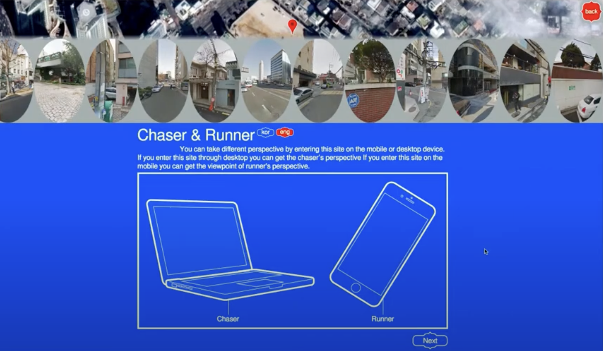

March 25, 2024
Through the evolution of technology, art has naturally merged with the internet, emerging Net Art. The main difference I perceive between Net Art and Physical Art is the way each form of art is contained. On one hand, Physical Art is something you can touch, often involving many tools to keep the paper or canvas from aging or during transportation. However, on the other hand, Net Art is easily transferrable through code, something that doesn't need to be physical. It can be easily transported through copy-paste in an email, and the only way to update it (to prevent “aging”) is by updating the code. In this aspect, I think Net Art provides more convenience and is an inevitable piece in the art world for the future. I think this medium is the only difference between Physical and Net Art as in both forms, the artist still has unlimited freedom of creativity and imagination.
Yehwan Song is a Korean graphic designer, web designer, and web developer. She used to live in New York, and she explores the contrasting expressive nature between wild New York and organized Seoul. She accidentally stumbled upon a logo design class in high school which started her career in design. She is also a project fellow at NYU Tisch.
Yehwan Song is interested in flipping the general understanding of web design and playing with visual tricks. She wants to change the way people use websites, and let them know that individuals can create websites, not only companies.
In a Screen Walk, Yehwan Song discussed her inspiration from Inhun Choi's novel The Square to employ the metaphor of “the square without a private chamber” to address how people are losing their privacy through AI. Throughout her other designs, she is also inspired. by things that move regularly. She has her own style and draws inspiration from a variety of things around her. She also researched nineties Ne Art to explore the evolution of art on the web.
Yehwan Song is interested in flipping the general understanding of web design and playing with visual tricks. She wants to change the way people use websites, and let them know that individuals can create websites, not only companies.
Yehwan Song is interested in flipping the general understanding of web design and playing with visual tricks. She wants to change the way people use websites, and let them know that individuals can create websites, not only companies. Yehwan challenges conventional internet projects which she critiques as homogeneity, and advocates for diversity and inclusivity. Yehwan Song strongly feels that the web should be more playful instead of consistent.
Yehwan Song starts by looking at trends and interactions. After she uses visual tricks to explore new ways of presenting information, breaking out of the traditional top-to-bottom scroll of a site. For example, for her work Chase and Runner, she created a site which constantly archives itself, taking a screenshot every three seconds which allow users to jump back and forward between precise movements. Each time, her work is like a puzzle that needs solving. She also transformed a smartphone into a flute. Her projects prompts users to deploy their bodies in unconventional ways to implement computer commands on the web. She is continuously learning new technologies and new web libraries to expand her imagination.
Yehwan Song incorporates Processing to create visuals, and she sticks to Internet work for her artworkers. She repeatedly checks rules and variable inputs while testing them under multiple conditions. She observes or archives the outputs under those rules to create the ending project visuals.
She intentionally avoids templates and designs unfamiliarity which makes her artwork more appealing to users. She creates designs for all devices including mobile, tablet, laptop, and desktop, and allows the user's to use a remote arrow, mouses, image of the body reacting as it touches, and all elements. Her creative coding even transforms a smartphone into a device to blow as in a flute performance or to walk on with many fingers instead of two legs.
Song's works provoke discussions on the political and social constructs of the web, advocating for the rights of marginalized individuals bined by cultural, political, and linguistic identities. Her art also blurs the lines between online and physical realms as she explore creative user-device ineractions. By doing so, she also changes user's perspective of Net Art as her unconventional style is quite different from regular scroll down websites.
I enjoyed exploring Yehwan Song's works as she artwork strays from conventional styles of website. She reminds me of the previous artist I researched Sol Lewitt as they both challenge conventional styles, but also in both instances, both artists value the imagination behind the art which is the driver of the artwork creation. Both artists convey that instead of limiting ourselves, we should feel free to explore and stray away from commonality. This reminds me of let you wear the shirt rather than let the shirt wear you. This means that we create the art rather than letting the art limit us.
Through the research subject, I think user interaction is most significant in this project. It will be fun for the user to explore how to interact with the artwork in a creative out-of-the-box way. Not only does Yehwan Song utilize a similar medium for her artwork, but she also incorporates user intearctions with it, which is similar to Project A where we incorporate mouse and key user intearctions. We can learn to value our own imagination, and inspires us to explore various trends to have fun with the audience and our artwork. After researching Yehwan Song, for Project B, I also hope to find creative ways for user interaction, in ways that are unpredictable, creative, and relatable to my project.
 Return to Classes →